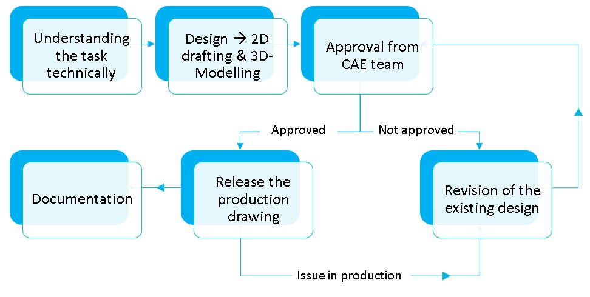

CAE Engineer - Vehicle Safety & Crash
Kube GmbH Ingenieurbüro, Weissach
Tasks
Tools
ANSA
LoCo
LS-DYNA
Animator
META
MS PowerPoint
MS Excel
Linux Environment
About the company
Based in Plochingen, Germany, Kube GmbH Ingenieurbüro is a top engineering firm that specializes in creating lightweight, safety-focused vehicle chassis and cutting-edge automotive system solutions. Kube develops customized models, procedures, and software solutions that satisfy the highest performance and safety criteria, with a particular emphasis on industry 4.0, driver assistance systems, and vehicle safety. The business is excellent at designing, developing, and prototyping cutting-edge technology, which guarantees quicker development and lowers risks. At the forefront of automotive engineering innovation, Kube GmbH is dedicated to turning concepts into real, useful solutions.
Company Link: Kube GmbH Ingenieurbüro